Early Investigation and Research
Digital Medium Ontology Series — Chapter One
Telecommunication & Simulation
Producer: Yi Huang
Content: In 1876, the first cohort of Westernisation scholars travelled to Britain to study telegraph technology; in 2025, self-funded students from the People's Republic journeyed to Britain to study contemporary art practice.
Time misaligns at Loch Ken in southern Scotland, where they intertwine into an invisible field, soaring through the air. The spark plug forgotten in Patton Church still flickers incessantly, yet this time it does not serve as proof of existence, but rather presents an elusive, indecipherable interlude of long and short waves.
Unrevealed realities shatter the imagination of personal pilgrimage. That frequency band, concealed within the opening lines of verse, carries the carrier wave transmitted to Denmark's Great Northern Radio Station. Only those from JJ Thomas Avenue possess the means to demodulate it...
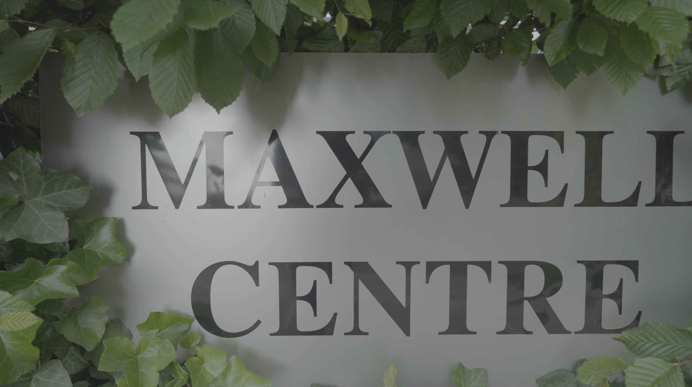
Format: Digital Video, Color, Sound, 1080×1920, 11.05 min
Tech: TouchDesigner, Net Art, Gaussian Splatting
前期调查研究
数字媒介本体系列首章
通信与模拟
制作人：黄熠
内容：一八七六，首批洋务学子赴英学习有线电报技术，二零二五，共和国自费留学生赴英学习当代艺术实践。时间在南苏格兰的肯湖错位，它们交织成无形的场域自空气中遨游，被遗忘在帕顿教堂的火花塞仍在不停闪烁，但此次它不是表现存在的证明，而是呈现着似有似无不可知的长短波间奏。未公开的现实把个人朝圣的想象击碎，那段藏在诗句开头的频段流通着发射至丹麦大北无线电装置里的载波，能够解调它的人只来自于JJ托马斯大道……
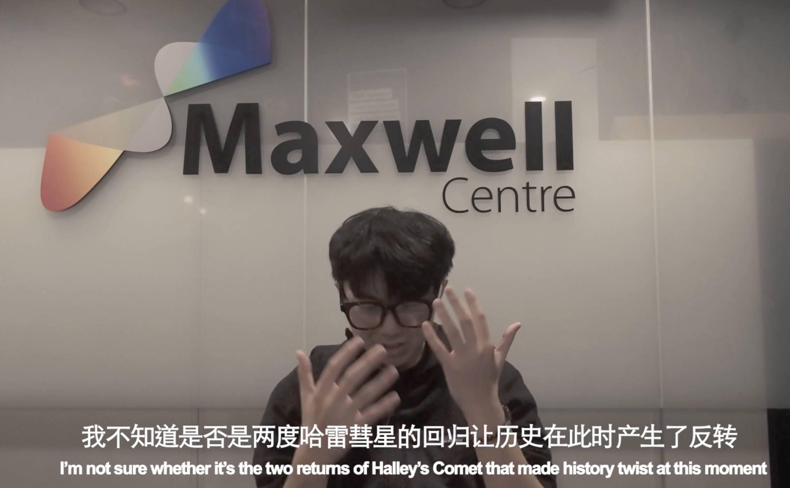
形式：数字影像、彩色、声音、1080*1920 11.05min
技术：TouchDesigner、网络艺术、高斯泼溅
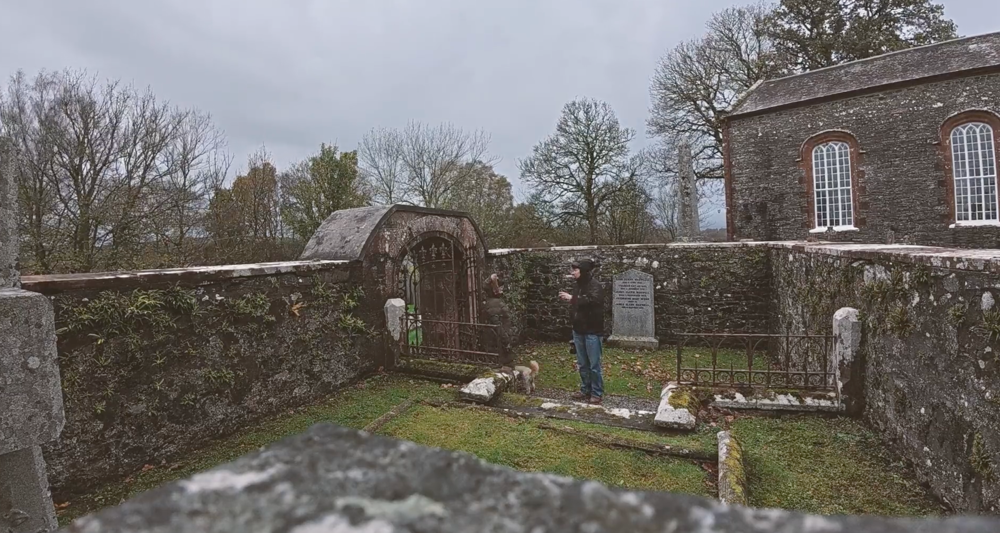
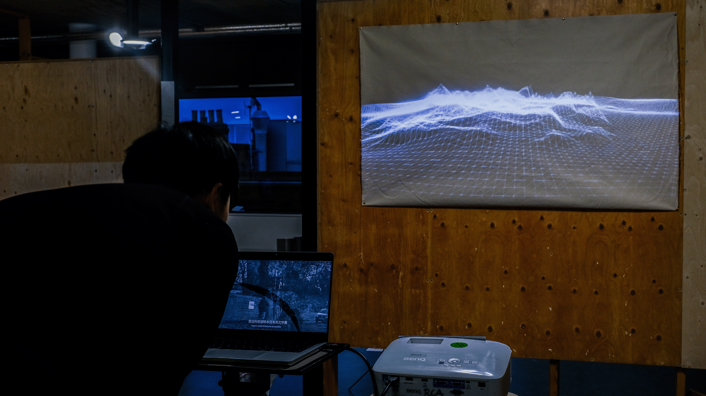
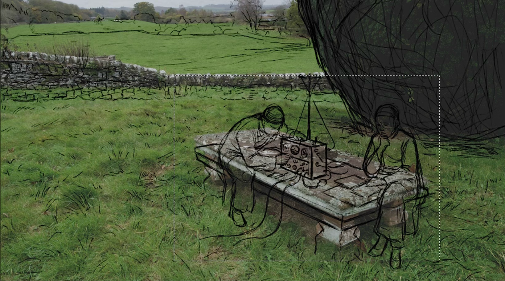
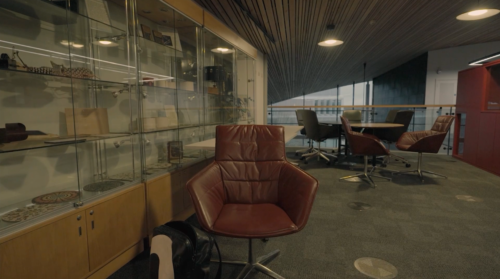
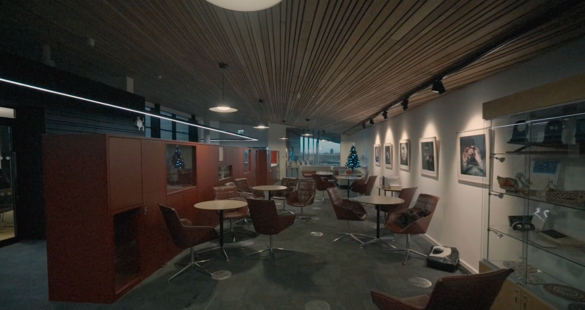
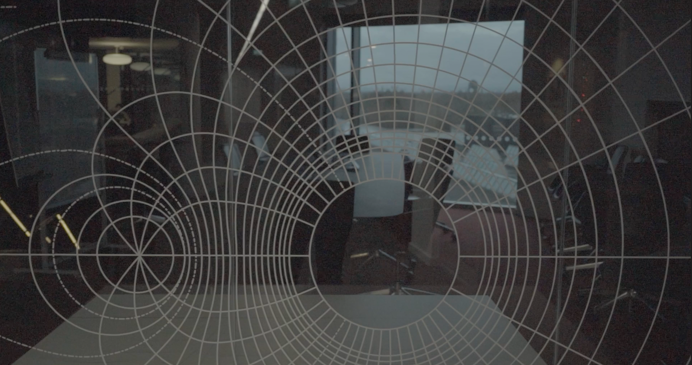
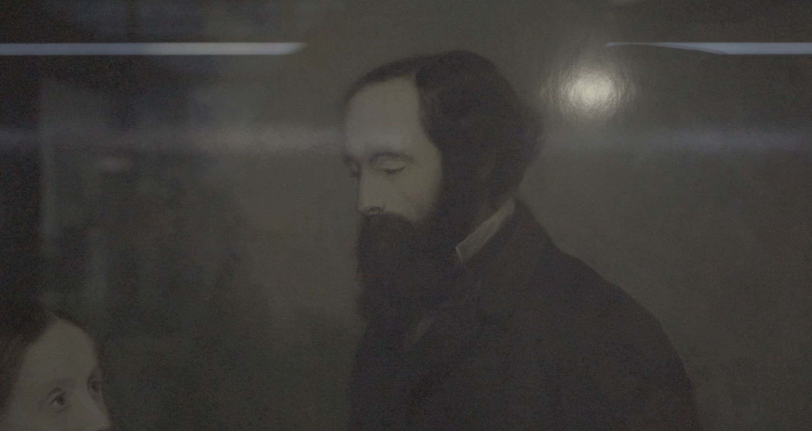
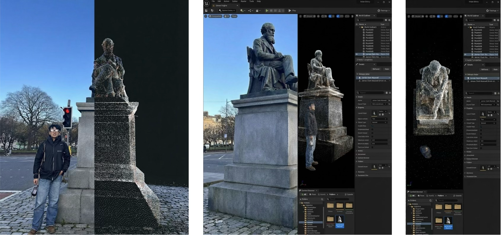
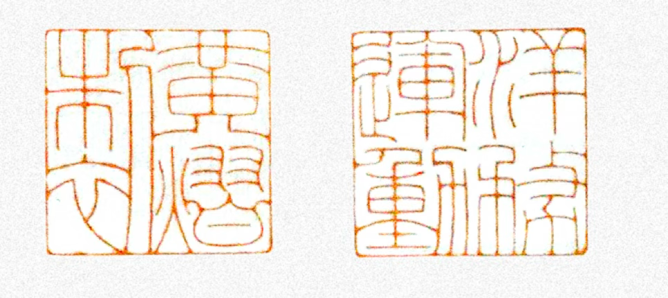
考察报告2025
本次调研以麦克斯韦为线索，前往剑桥大学麦克斯韦中心，考察麦克斯韦的电磁理论与当代数字技术之间的关系。调研过程中，华为成为一个重要节点：2017 年，这家中国科技公司进入这一以麦克斯韦精神为名的科研场域；此后，其在英国的相关业务又因不可抗力因素逐渐终止……
Field Research Report 2025
This research took Maxwell as its guiding thread, travelling to the Maxwell Centre at the University of Cambridge to examine the relationship between Maxwell's electromagnetic theory and contemporary digital technology. In the course of the investigation, the collaboration between Huawei and the Maxwell Centre emerged as a significant node: in 2017, a Chinese technology company entered this research field named in the spirit of Maxwell; thereafter, its related operations in the United Kingdom were gradually discontinued due to force majeure...
Reference News
© 2025 All Rights Reserved.